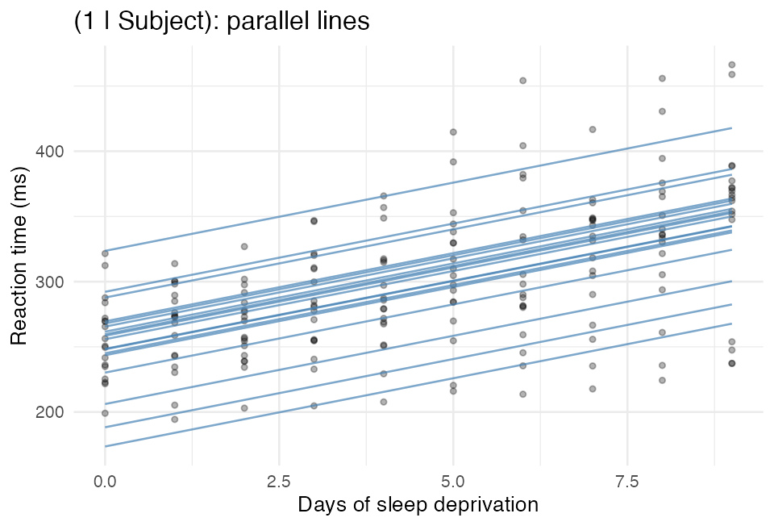
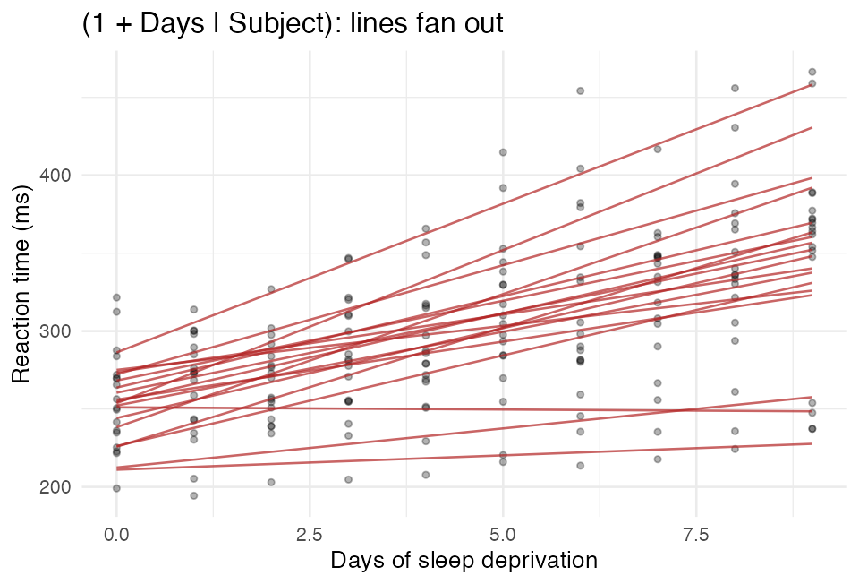
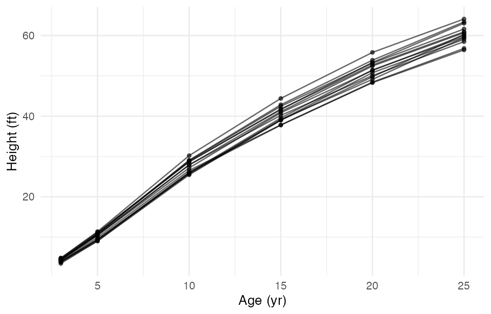
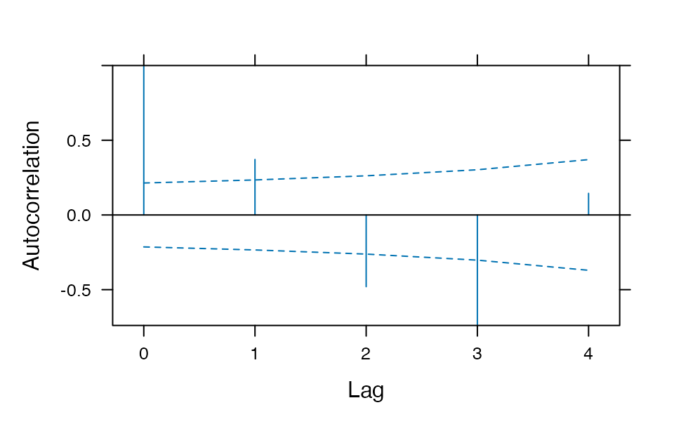

library(lme4)
library(lmerTest) # Satterthwaite / Kenward-Roger df for lmer
library(nlme) # residual correlation and variance structures
library(tidyverse)
options(contrasts = c("contr.sum", "contr.poly"))Mixed Model Structures
Random slopes and variance-covariance structures
Random intercept vs. random intercept-and-slope in lme4, and how to change the residual variance-covariance matrix (AR(1), compound symmetry, unstructured, unequal variances) with nlme for repeated-measures and time-series data.
Why This Page Exists
The linear mixed models lecture fits exactly one random effect — (1 | patch), a random intercept. That is the right place to start, and it covers most nested designs. But two questions come up the moment you have data collected over time or along a gradient:
- What if the relationship differs from group to group, not just the baseline? → a random slope.
- What if observations close together in time are more alike than observations far apart? → a residual correlation structure.
This page answers both, with runnable code. It is a reference, not a lecture — read the section you need.
ImportantThe two halves of a mixed model
Every mixed model specifies two variance-covariance matrices, and people routinely confuse them:
\[\mathbf{V} = \underbrace{\mathbf{Z}\,\mathbf{G}\,\mathbf{Z}^\top}_{\text{random effects}} \;+\; \underbrace{\mathbf{R}}_{\text{residuals}}\]
- \(\mathbf{G}\) — the variance-covariance of the random effects. This is what
(1 | g)vs.(1 + x | g)changes. - \(\mathbf{R}\) — the variance-covariance of the residuals. By default \(\mathbf{R} = \sigma^2\mathbf{I}\): equal variances, zero correlation. This is what
correlation =andweights =change.
lme4 can only change \(\mathbf{G}\). To change \(\mathbf{R}\) you need nlme or glmmTMB. That single fact explains most of this page.
Setup
WarningLoad order matters
nlme and lme4 both define lmer-adjacent generics, and both export a function called lmList. Loading nlme after lme4 (as above) is the order that works for this page: lmer() still comes from lme4, and lme(), gls(), corAR1() come from nlme. If anything behaves oddly, call functions explicitly — lme4::lmer(), nlme::lme().
Part 1 · Random Intercept Only
We will use sleepstudy, which ships with lme4: the average reaction time of 18 subjects on each of 10 nights of restricted sleep. Eighteen groups, ten observations each, perfectly balanced.
data(sleepstudy)
head(sleepstudy, 4)
## Reaction Days Subject
## 1 249.5600 0 308
## 2 258.7047 1 308
## 3 250.8006 2 308
## 4 321.4398 3 308A random intercept says: every subject has their own baseline reaction time, but sleep deprivation costs everybody the same amount per night.
m_int <- lmer(Reaction ~ Days + (1 | Subject), data = sleepstudy)
VarCorr(m_int)
## Groups Name Std.Dev.
## Subject (Intercept) 37.124
## Residual 30.991
fixef(m_int)
## (Intercept) Days
## 251.40510 10.46729\[\text{Reaction}_{ij} = \beta_0 + \beta_1 \text{Days}_{ij} + b_{0i} + \epsilon_{ij}, \qquad b_{0i} \sim N(0, \sigma^2_{\text{int}})\]
One extra variance, 37.1², is all the random effect costs. Read the fit as 18 parallel lines — different heights, identical slope of 10.47 ms per night.
sleepstudy$fit_int <- fitted(m_int)
ggplot(sleepstudy, aes(Days, Reaction, group = Subject)) +
geom_point(alpha = 0.3, size = 1) +
geom_line(aes(y = fit_int), alpha = 0.7, color = "steelblue") +
labs(x = "Days of sleep deprivation", y = "Reaction time (ms)",
title = "(1 | Subject): parallel lines") +
theme_minimal(base_size = 10)
NoteWhen a random intercept is enough
- The groups are nesting units, not things you measured a slope in — patches, tanks, litters, plots.
- You have one predictor level per group (every quadrat in a patch got the same treatment), so there is no within-group slope to estimate. This is the sea urchin case:
treatdoes not vary inside a patch, so(1 + treat | patch)is not even estimable.
Part 2 · Random Intercept and Random Slope
Now allow each subject their own response to sleep loss:
m_slope <- lmer(Reaction ~ Days + (1 + Days | Subject), data = sleepstudy)
VarCorr(m_slope)
## Groups Name Std.Dev. Corr
## Subject (Intercept) 24.7407
## Days 5.9221 0.066
## Residual 25.5918\[\text{Reaction}_{ij} = \beta_0 + \beta_1 \text{Days}_{ij} + b_{0i} + b_{1i}\text{Days}_{ij} + \epsilon_{ij}\]
\[\begin{pmatrix} b_{0i} \\ b_{1i} \end{pmatrix} \sim N\!\left( \begin{pmatrix} 0 \\ 0 \end{pmatrix},\; \mathbf{G} = \begin{pmatrix} \sigma^2_{\text{int}} & \rho\,\sigma_{\text{int}}\sigma_{\text{slope}} \\ \rho\,\sigma_{\text{int}}\sigma_{\text{slope}} & \sigma^2_{\text{slope}} \end{pmatrix} \right)\]
VarCorr() now prints three numbers, not one: an intercept SD, a slope SD, and the correlation between them. That correlation is the off-diagonal of \(\mathbf{G}\) — it asks do subjects who start slow also deteriorate fastest?
head(coef(m_slope)$Subject, 5) # each subject's own intercept and slope
## (Intercept) Days
## 308 253.6637 19.666262
## 309 211.0064 1.847605
## 310 212.4447 5.018429
## 330 275.0957 5.652936
## 331 273.6654 7.397374sleepstudy$fit_slope <- fitted(m_slope)
ggplot(sleepstudy, aes(Days, Reaction, group = Subject)) +
geom_point(alpha = 0.3, size = 1) +
geom_line(aes(y = fit_slope), alpha = 0.7, color = "firebrick") +
labs(x = "Days of sleep deprivation", y = "Reaction time (ms)",
title = "(1 + Days | Subject): lines fan out") +
theme_minimal(base_size = 10)
TipReading the formula, every time
\[(\ \text{what varies}\ \mid\ \text{across what}\ )\]
| Formula | \(\mathbf{G}\) is | Parameters in \(\mathbf{G}\) |
|---|---|---|
(1 \| g) |
1 × 1 | 1 variance |
(1 + x \| g) |
2 × 2, correlated | 2 variances + 1 correlation = 3 |
(1 + x + z \| g) |
3 × 3 | 3 variances + 3 correlations = 6 |
(0 + x \| g) |
1 × 1 | 1 variance (slope only, shared intercept) |
1 + x is the default, so (x \| g) and (1 + x \| g) are the same model. Write the 1 anyway — it is what reminds you the intercept is in there.
WarningRandom slopes get expensive fast
A random slope for every predictor is a \(k \times k\) matrix with \(k(k+1)/2\) parameters. Three random slopes plus an intercept is 10 variance parameters estimated from however many groups you have. This is the single most common cause of boundary (singular) fit — the model is asking the data for more than it contains. Keep the random-effects structure as simple as the design allows.
Part 4 · Choosing Between Them
# RANDOM effects: compare with REML, which is the default.
# refit = FALSE stops anova() from silently refitting with ML.
anova(m_int, m_uncorr, m_corr, refit = FALSE)
## Data: sleepstudy
## Models:
## m_int: Reaction ~ Days + (1 | Subject)
## m_uncorr: Reaction ~ Days + (1 | Subject) + (0 + Days | Subject)
## m_corr: Reaction ~ Days + (1 + Days | Subject)
## npar AIC BIC logLik -2*log(L) Chisq Df Pr(>Chisq)
## m_int 4 1794.5 1807.2 -893.23 1786.5
## m_uncorr 5 1753.7 1769.6 -871.83 1743.7 42.796 1 6.076e-11 ***
## m_corr 6 1755.6 1774.8 -871.81 1743.6 0.041 1 0.8395
## ---
## Signif. codes: 0 '***' 0.001 '**' 0.01 '*' 0.05 '.' 0.1 ' ' 1The jump from m_int to m_uncorr is enormous — the random slope is real. The further jump to m_corr is worth nothing, so the intercept–slope correlation is not supported here.
# FIXED effects: refit with ML first. REML likelihoods from models with
# different fixed effects are NOT comparable.
m0 <- lmer(Reaction ~ 1 + (1 + Days | Subject), sleepstudy, REML = FALSE)
m1 <- lmer(Reaction ~ Days + (1 + Days | Subject), sleepstudy, REML = FALSE)
anova(m0, m1)
## Data: sleepstudy
## Models:
## m0: Reaction ~ 1 + (1 + Days | Subject)
## m1: Reaction ~ Days + (1 + Days | Subject)
## npar AIC BIC logLik -2*log(L) Chisq Df Pr(>Chisq)
## m0 5 1785.5 1801.4 -887.74 1775.5
## m1 6 1763.9 1783.1 -875.97 1751.9 23.537 1 1.226e-06 ***
## ---
## Signif. codes: 0 '***' 0.001 '**' 0.01 '*' 0.05 '.' 0.1 ' ' 1
# or, better for a small sample, the F-test with adjusted denominator df
anova(m_slope)
## Type III Analysis of Variance Table with Satterthwaite's method
## Sum Sq Mean Sq NumDF DenDF F value Pr(>F)
## Days 30031 30031 1 17 45.853 3.264e-06 ***
## ---
## Signif. codes: 0 '***' 0.001 '**' 0.01 '*' 0.05 '.' 0.1 ' ' 1
ImportantThree rules for comparing mixed models
- Different random effects, same fixed effects → compare with REML (
refit = FALSE). - Different fixed effects → compare with ML (
REML = FALSE), or better, don’t do an LRT at all — use the Kenward-Roger or Satterthwaite F-test. - The LRT p-value for dropping a variance is conservative. The null sits on the boundary (σ² = 0), so the test statistic is not really χ²₁ — it is a 50:50 mixture of χ²₀ and χ²₁. Halve the p-value, or use
RLRsim::exactRLRT(), if you are near the line.
TipKeep it maximal, but keep it fitting
The common advice (Barr et al. 2013) is to include a random slope for every predictor that varies within a group — the “maximal” model — because omitting one inflates Type I error for that fixed effect. The counter-argument (Bates et al. 2015) is that maximal models often do not converge and cost power. A workable compromise: start maximal, and if you get a singular fit, drop correlations first (||), then the least-supported slope, and report what you dropped and why.
Part 5 · Changing the Residual Matrix — Why You Need nlme
Everything so far changed \(\mathbf{G}\). Now for \(\mathbf{R}\).
lmer() hard-codes \(\mathbf{R} = \sigma^2\mathbf{I}\): every residual has the same variance and no two residuals are correlated. For repeated measures that is often wrong on both counts. nlme::lme() lets you set \(\mathbf{R}\) with two arguments:
correlation =— the correlation part of \(\mathbf{R}\)weights =— the variance part of \(\mathbf{R}\)
We switch datasets to something with a real time axis: Loblolly, which ships with base R — the height of 14 loblolly pine seed sources measured at ages 3, 5, 10, 15, 20 and 25 years. Fourteen groups, six times each, balanced, and unevenly spaced in time, which will matter.
data(Loblolly)
lob <- as.data.frame(Loblolly)
str(lob)
## 'data.frame': 84 obs. of 3 variables:
## $ height: num 4.51 10.89 28.72 41.74 52.7 ...
## $ age : num 3 5 10 15 20 25 3 5 10 15 ...
## $ Seed : Ord.factor w/ 14 levels "329"<"327"<"325"<..: 10 10 10 10 10 10 13 13 13 13 ...
table(table(lob$Seed)) # 14 seed sources, 6 measurements each
##
## 6
## 14
sort(unique(lob$age))
## [1] 3 5 10 15 20 25ggplot(lob, aes(age, height, group = Seed)) +
geom_line(alpha = 0.6) + geom_point(size = 1, alpha = 0.6) +
labs(x = "Age (yr)", y = "Height (ft)") +
theme_minimal(base_size = 10)
The baseline model, the nlme equivalent of lmer(height ~ age + (1|Seed)):
ctrl <- lmeControl(opt = "optim", msMaxIter = 200)
l_ri <- lme(height ~ age, random = ~ 1 | Seed, data = lob, control = ctrl)
# nlme syntax map:
# lmer(y ~ x + (1 | g)) -> lme(y ~ x, random = ~ 1 | g)
# lmer(y ~ x + (1 + x | g)) -> lme(y ~ x, random = ~ 1 + x | g)
# lmer(y ~ x + (1|a) + (1|b)) -> lme(y ~ x, random = list(a = ~1, b = ~1))
# ... for NESTED a/b only; nlme cannot do
# crossed random effects. Use lme4 for those.
VarCorr(l_ri)
## Seed = pdLogChol(1)
## Variance StdDev
## (Intercept) 0.7735569 0.8795208
## Residual 7.9474860 2.8191286
NoteIs my residual correlation real? Look first.
ACF(l_ri, maxLag = 4)
## lag ACF
## 1 0 1.0000000
## 2 1 0.3713379
## 3 2 -0.4800010
## 4 3 -0.7395571
## 5 4 0.1445762
plot(ACF(l_ri, maxLag = 4), alpha = 0.05)
ACF() on an lme fit is the diagnostic: it computes the autocorrelation of the within-group residuals at each lag. Points outside the band mean the independence assumption built into \(\mathbf{R}\) is violated.
Keep maxLag well below the number of observations per group. With 6 measurements per tree, lag 5 rests on one pair per group and is noise.
WarningSerial correlation is often a misspecified mean, not correlated noise
Notice the lag-1 value is positive and lag 2–3 are negative. That is the signature of fitting a straight line to a curve: the residuals are systematically high in the middle and low at the ends, and an ACF reads that as correlation.
Before you buy an AR(1), ask whether the fix is actually a better mean structure — poly(age, 2), a log transform, a spline, or a nonlinear growth model (nlme::nlme()). An AR(1) bolted onto the wrong curve makes the p-values look better without making the model right. On this dataset both are arguably true, which is why it is a good teaching example and a bad final analysis.
Part 6 · Time-Series Correlation Structures
AR(1) — the workhorse
An autoregressive-1 structure says the correlation between two residuals decays geometrically with how far apart they are:
\[\mathbf{R} = \sigma^2 \begin{pmatrix} 1 & \phi & \phi^2 & \phi^3 \\ \phi & 1 & \phi & \phi^2 \\ \phi^2 & \phi & 1 & \phi \\ \phi^3 & \phi^2 & \phi & 1 \end{pmatrix}\]
One parameter, \(\phi\), for a matrix of any size. That is why it is the default choice for time series.
l_ar1 <- lme(height ~ age, random = ~ 1 | Seed, data = lob,
correlation = corAR1(form = ~ 1 | Seed), control = ctrl)
# the estimated phi
coef(l_ar1$modelStruct$corStruct, unconstrained = FALSE)
## Phi
## 0.5548038
# the 6x6 residual correlation matrix the model is now using
round(corMatrix(l_ar1$modelStruct$corStruct)[[1]], 3)
## [,1] [,2] [,3] [,4] [,5] [,6]
## [1,] 1.000 0.555 0.308 0.171 0.095 0.053
## [2,] 0.555 1.000 0.555 0.308 0.171 0.095
## [3,] 0.308 0.555 1.000 0.555 0.308 0.171
## [4,] 0.171 0.308 0.555 1.000 0.555 0.308
## [5,] 0.095 0.171 0.308 0.555 1.000 0.555
## [6,] 0.053 0.095 0.171 0.308 0.555 1.000
ImportantRead
form = carefully — it is the whole thing
correlation = corAR1(form = ~ time | group)
- right of the
|— the grouping. Residuals in different groups are independent. Almost always the same grouping as your random effect. - left of the
|— the time variable, which must be a position index:corAR1raises \(\phi\) to the power of the difference in position, and assumes successive positions are equally spaced. form = ~ 1 | gmeans “use row order within the group”. Fine only if the rows are sorted by time and nothing is missing. Being explicit (form = ~ visit | g) is safer.
corCAR1 — when the times are not equally spaced
Our ages are 3, 5, 10, 15, 20, 25. The gap from 3 to 5 is two years; the gap from 20 to 25 is five. corAR1 with form = ~ 1 | Seed treats both as “one step apart”, which is wrong. corCAR1 uses the actual value: \(\text{cor} = \phi^{|t_i - t_j|}\) for continuous \(t\).
l_car1 <- lme(height ~ age, random = ~ 1 | Seed, data = lob,
correlation = corCAR1(form = ~ age | Seed), control = ctrl)
coef(l_car1$modelStruct$corStruct, unconstrained = FALSE)
## Phi
## 0.8940231
Warning
corAR1 needs an integer time variable — and fails silently
corAR1 requires the variable left of the | to be a consecutive integer sequence. Hand it age and it does not error:
l_wrong <- lme(height ~ age, random = ~ 1 | Seed, data = lob,
correlation = corAR1(form = ~ age | Seed), control = ctrl)
coef(l_wrong$modelStruct$corStruct, unconstrained = FALSE)
## Phi1
## 0φ comes back as exactly 0 — the structure quietly switched itself off, and you would have reported “no autocorrelation” from a model that found φ = 0.55 when asked properly. Either pass a true index (form = ~ 1 | Seed on time-sorted data, or a visit column numbered 1, 2, 3 …) or use corCAR1, which is built for real-valued time. Always print the estimated φ.
The rest of the catalogue
# compound symmetry: ONE correlation for every pair of times, any distance
l_cs <- lme(height ~ age, random = ~ 1 | Seed, data = lob,
correlation = corCompSymm(form = ~ 1 | Seed), control = ctrl)
# ARMA(1,1): an AR part and a moving-average part
l_arma <- lme(height ~ age, random = ~ 1 | Seed, data = lob,
correlation = corARMA(form = ~ 1 | Seed, p = 1, q = 1),
control = ctrl)anova(l_ri, l_cs)
## Model df AIC BIC logLik Test L.Ratio p-value
## l_ri 1 4 429.6429 439.2697 -210.8214
## l_cs 2 5 431.6429 443.6765 -210.8214 1 vs 2 1.591616e-12 1
ImportantCompound symmetry adds nothing to a random intercept
The log-likelihoods are identical and the LRT statistic is zero. This is not a bug and it is worth understanding, because it is the cleanest illustration of \(\mathbf{V} = \mathbf{ZGZ}^\top + \mathbf{R}\):
A random intercept already implies compound symmetry. Two observations in the same group share \(b_{0i}\), so
\[\text{cor} = \frac{\sigma^2_{\text{int}}}{\sigma^2_{\text{int}} + \sigma^2} = \text{ICC}\]
for every pair, regardless of distance. (1 | Seed) and corCompSymm are two notations for the same matrix, and fitting both makes the model unidentifiable — nlme just puts the whole thing in one of the two terms.
So: the reason to reach for AR(1) is not that you have grouped data — the random intercept already handled that. It is that you believe observations close in time are more alike than observations far apart. A random intercept cannot express that. AR(1) can.
Comparing them
AIC(l_ri, l_cs, l_ar1, l_car1, l_arma)
## df AIC
## l_ri 4 429.6429
## l_cs 5 431.6429
## l_ar1 5 410.6506
## l_car1 5 403.0928
## l_arma 6 395.9626These are not all nested in one another, so this is an AIC comparison, not a sequence of LRTs. The ordering is the story:
l_csis worse thanl_rionly by the 2 points its redundant extra parameter costs.l_ar1is a large improvement — there is serial correlation.l_car1is better still, because it uses the real age gaps.l_armais best here, but with 14 groups be suspicious of the third correlation parameter before you report it.
NoteStructures available in
nlme
| Call | \(\mathbf{R}\) structure | Parameters |
|---|---|---|
| (default) | independent, equal variance | 1 (σ²) |
corCompSymm |
compound symmetry / exchangeable | 2 |
corAR1 |
AR(1), equally spaced integer time | 2 |
corCAR1 |
continuous-time AR(1) | 2 |
corARMA(p, q) |
ARMA | 2 + p + q |
corSymm |
unstructured (“general”) | 1 + t(t−1)/2 |
corExp, corGaus, corSpher, corLin, corRatio |
spatial — decay with 2-D distance; form = ~ x + y \| g |
2–3 |
The spatial ones are the same idea with distance in place of time, and are how you handle spatially autocorrelated residuals.
Unstructured — estimate every correlation
The opposite extreme: no assumption at all, one parameter per pair of times. With 6 times that is 15 correlations plus 6 variances.
l_un <- gls(height ~ age, data = lob,
correlation = corSymm(form = ~ 1 | Seed),
weights = varIdent(form = ~ 1 | age),
control = glsControl(opt = "optim"))
round(corMatrix(l_un$modelStruct$corStruct)[[1]], 3)
## [,1] [,2] [,3] [,4] [,5] [,6]
## [1,] 1.000 0.985 0.935 0.928 0.940 0.868
## [2,] 0.985 1.000 0.974 0.969 0.971 0.881
## [3,] 0.935 0.974 1.000 0.995 0.981 0.847
## [4,] 0.928 0.969 0.995 1.000 0.993 0.882
## [5,] 0.940 0.971 0.981 0.993 1.000 0.919
## [6,] 0.868 0.881 0.847 0.882 0.919 1.000
WarningUnstructured needs a lot of data
\(t(t-1)/2\) correlations from n groups. With 6 times and 14 seed sources we are estimating 15 correlations from 14 groups — the numbers above are not to be trusted, and they are near 1 because this is a growth curve, not because the trees are interchangeable. Rule of thumb: you want many more groups than correlation parameters. If not, use AR(1).
Note also that gls() has no random effect — with an unstructured \(\mathbf{R}\) you usually drop the random intercept, since compound symmetry is already a special case of unstructured (see the trap above).
Part 7 · Unequal Variances
The other half of \(\mathbf{R}\). The Loblolly figure fans out with age, so a single σ² is clearly wrong.
# one residual variance per age (a "variance group")
l_vi <- lme(height ~ age, random = ~ 1 | Seed, data = lob,
weights = varIdent(form = ~ 1 | age), control = ctrl)
# variance as a smooth power of the fitted value: Var = sigma^2 * |mu|^(2*delta)
l_vp <- lme(height ~ age, random = ~ 1 | Seed, data = lob,
weights = varPower(), control = ctrl)
AIC(l_ri, l_vi, l_vp)
## df AIC
## l_ri 4 429.6429
## l_vi 9 367.2260
## l_vp 5 369.7453
anova(l_ri, l_vp)
## Model df AIC BIC logLik Test L.Ratio p-value
## l_ri 1 4 429.6429 439.2697 -210.8214
## l_vp 2 5 369.7453 381.7789 -179.8727 1 vs 2 61.89753 <.0001Both are massive improvements — a single σ² was badly wrong. varIdent wins on AIC here (it spends 5 extra parameters and uses them), but varPower gets most of the way on one parameter, and unlike varIdent it extrapolates to ages you did not measure. With a continuous trend like this one, prefer varPower; reserve varIdent for a handful of genuinely discrete groups.
NoteVariance functions in
nlme
| Call | Models | Use when |
|---|---|---|
varIdent(form = ~ 1 \| f) |
one σ² per level of f |
a few discrete groups with obviously different spread |
varPower() |
σ²·|μ|^2δ | spread grows with the mean |
varExp() |
σ²·e^(2δμ) | spread grows faster than a power |
varConstPower() |
σ²(δ₁+|μ|^δ₂)² | spread grows but is nonzero at μ = 0 |
varFixed(~ x) |
σ²·x | you know the weights (e.g. group sizes) |
These combine: weights = varPower() and correlation = corCAR1(...) in the same call is normal and often necessary.
Which Package Do I Use?
Important
| I need | lme4 |
nlme |
glmmTMB |
|---|---|---|---|
| Random intercepts and slopes | ✅ | ✅ | ✅ |
| Crossed random effects | ✅ fast | ❌ nested only | ✅ |
| Thousands of groups | ✅ fast | slow | ✅ |
| Residual correlation (AR1, …) | ❌ | ✅ | ✅ (ar1(), ou(), exp()) |
| Unequal residual variance | ❌ | ✅ weights = |
✅ dispformula = |
| Non-normal response | glmer() |
❌ | ✅ best support |
| Zero inflation | ❌ | ❌ | ✅ |
| Kenward-Roger F-tests | ✅ pbkrtest |
❌ containment df only | ❌ |
A practical decision rule. Nested or crossed grouping and nothing special about the residuals → lme4. Repeated measures over time, or unequal variances, with a normal response → nlme. Anything non-normal, zero-inflated, or needing both a correlation structure and crossed random effects → glmmTMB.
Tip
glmmTMB equivalents, for reference
glmmTMB writes a residual correlation structure as an extra random term, with the time variable as a factor:
library(glmmTMB)
# AR(1) residuals within Seed
glmmTMB(height ~ age + (1 | Seed) + ar1(factor(age) + 0 | Seed), data = lob)
# Ornstein-Uhlenbeck: continuous-time AR(1), the corCAR1 analogue
glmmTMB(height ~ age + ou(factor(age) + 0 | Seed), data = lob)
# unstructured
glmmTMB(height ~ age + us(factor(age) + 0 | Seed), data = lob)
# unequal residual variance by age
glmmTMB(height ~ age + (1 | Seed), dispformula = ~ factor(age), data = lob)The + 0 matters — it drops the intercept from that term so you get one level per time point. glmmTMB is not installed on the lab machines; install it with install.packages("glmmTMB") if you want to try these.
Common Errors and What They Mean
Warning
boundary (singular) fit: see help('isSingular')
A variance or correlation hit the edge of its range — a variance of exactly 0, or a correlation of exactly ±1. Your random-effects structure asks for more than the data support. Drop the correlation (||), then the least-supported slope. Do not ignore it.
Warning
Model failed to converge with max|grad| ...
Usually benign if small (< 0.01) and the estimates look sane. Try scaling your predictors (scale(x)) — wildly different predictor scales are the usual cause — or a different optimizer: control = lmerControl(optimizer = "bobyqa").
Warning
Error ... nlminb problem, convergence error code = 1 (nlme)
nlme’s default optimizer is fragile with correlation structures. Pass control = lmeControl(opt = "optim", msMaxIter = 200), as every lme() call on this page does.
Warning
number of levels of each grouping factor must be < number of observations
You have asked for a random effect with one group per row. That variance is not identifiable separately from the residual. Either drop it or model it as the residual.
The One-Page Summary
Important\(\mathbf{G}\) — the random effects (
lme4 or nlme)
(1 | g) # random intercept: parallel lines
(1 + x | g) # intercept + slope: lines fan out, correlated
(1 | g) + (0 + x | g) # same, correlation forced to 0
(x || g) # shorthand for the line above (numeric x only)
(0 + x | g) # slope only, shared intercept
(1 | a/b) # b nested in a == (1|a) + (1|a:b)
(1 | a) + (1 | b) # a and b crossed\(\mathbf{R}\) — the residuals (nlme or glmmTMB)
lme(y ~ x, random = ~ 1 | g, data = d,
correlation = corCAR1(form = ~ time | g), # correlation part
weights = varPower(), # variance part
control = lmeControl(opt = "optim"))Diagnose before you prescribe: plot(ACF(fit), alpha = 0.05) for serial correlation, residuals-vs-fitted for unequal variance. Then compare candidate structures by AIC under REML with identical fixed effects.
Readings
- Pinheiro, J. C., & Bates, D. M. (2000). Mixed-Effects Models in S and S-PLUS. Springer. §5.3 is the definitive account of
nlme’scorrelation =andweights =arguments. - Zuur, A. F., Ieno, E. N., Walker, N. J., Saveliev, A. A., & Smith, G. M. (2009). Mixed Effects Models and Extensions in Ecology with R. Springer. Ch. 6–7 — temporal and spatial correlation in ecological data, worked in
nlme. - Bates, D., Mächler, M., Bolker, B., & Walker, S. (2015). Fitting linear mixed-effects models using lme4. Journal of Statistical Software, 67(1), 1–48.
- Barr, D. J., Levy, R., Scheepers, C., & Tily, H. J. (2013). Random effects structure for confirmatory hypothesis testing: Keep it maximal. Journal of Memory and Language, 68(3), 255–278.
- Brooks, M. E., et al. (2017). glmmTMB balances speed and flexibility among packages for zero-inflated generalized linear mixed modeling. The R Journal, 9(2), 378–400.